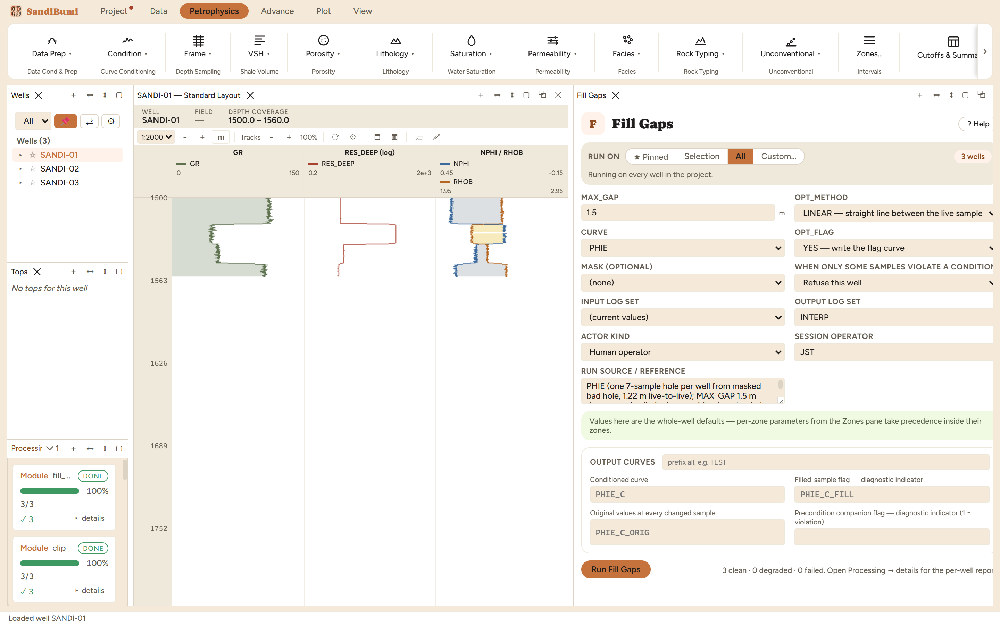

Fill Gaps closes interior holes in a curve that are no wider than MAX_GAP,
and marks every sample it invents in a companion flag curve. Reach for it
when a downstream consumer genuinely needs continuity (a filter, a synthetic,
a cumulative integral) and the holes are short enough that interpolation is
defensible. A filled sample is not a measurement, and the flag exists so that
fact survives: mask on the flag to take invented samples back out of any
later run.
The physics
LINEAR interpolation between the last live sample above the hole and the
first live one below. Two rules carry the honesty:
A gap open at one end is never filled. A hole at the top or
bottom of the curve has live data on one side only, so filling it would
be extrapolation, inventing rock beyond the last measurement.
A gap is measured live-to-live. Seven missing samples at
0.15 m sampling are not a 1.07 m hole; the distance from the
last real value to the next is eight steps, 1.22 m, and that is the
width MAX_GAP judges.
The picks and why
On this dataset the porosity methods' bad-hole exclusion leaves PHIE far
from continuous (573 of its 1185 samples are finite), and most of the
missing stretches are wider than any limit worth entering, so they stay
missing. One hole per well is different: 7 samples wide, from the masked
washout, 1.22 m live-to-live. That makes the limit's behaviour
demonstrable from both sides, run live:
MAX_GAP 1.5 m (the walkthrough pick, wider than the hole):
exactly those 21 samples filled across the three wells, the curve
goes 573 to 594 finite, and all 21 carry the flag.
MAX_GAP 1 m (just under the hole): 0 filled. Not a
failure, the module keeping its word: a hole wider than the stated limit
stays honestly missing.
The limit is therefore the whole decision: how much rock are you prepared
to invent by drawing a straight line through it? Across a masked washout the
honest answer is often none, which is what the 1 m run said.
Step by step
Open Petrophysics ▸ Condition ▸ Fill Gaps.
Select the curve and state MAX_GAP as the widest hole you are willing
to bridge, remembering it is judged live-to-live.
Fill the custody line and press Run Fill Gaps.
One limit, one method, and a flag that follows every invented
sample downstream.
Reading the result
3 clean, 21 filled, every one flagged. Verify both counts in
the Database Inspector:
SELECT COUNT(*) FILTER (WHERE value = 1) AS filled
FROM computed_curves WHERE curve_name = 'PHIE_C_FILL'

The filled curve reaches 594 finite samples; the 21 invented
ones are flagged, not hidden.
QC and pitfalls
Think about why the hole exists before bridging it. This hole is a
masked washout: the samples were removed because the tool was not
reading rock, and a straight line across the washout asserts smooth
porosity precisely where nothing was measured. Filling made the
demonstration; masking on the flag takes it back out of any run that
computes an answer.
Without the flag a filled value is indistinguishable from a logged one
in a crossplot, a histogram or a net count, and the person reading the
number is not the person who chose the limit. The flag curve is the
module's most important output.
Ends never fill, by design. If a curve is short at the top of the
interval, the fix is a splice with the run that covered it, not an
extrapolation.